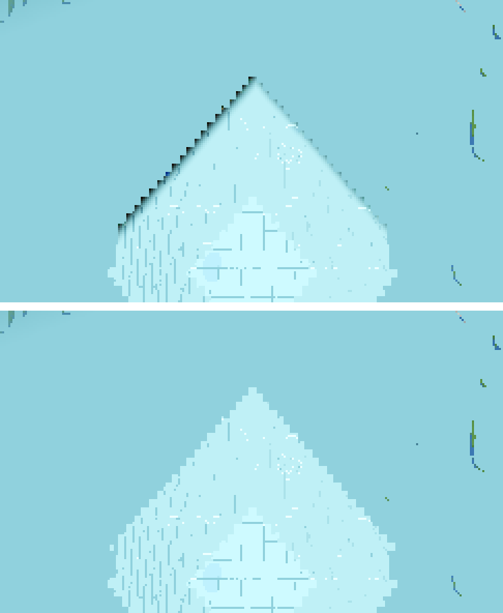
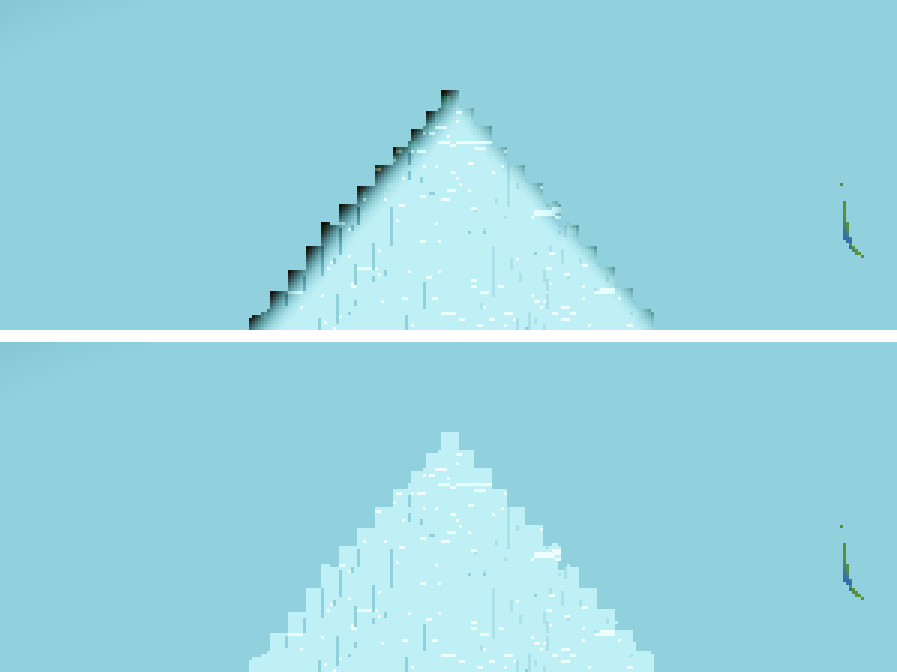

Builder: delegated subagent. Tree: dirty with the 4 files of a concurrent session (godot/scenes/main.gd, godot/autoload/game.gd, godot/entities/drop.gd, godot/autoload/debug.gd) — every measurement ran on that tree, and the BEFORE and AFTER renders were taken on the SAME tree back-to-back, so the A/B isolates the one shader line. User config: radius 24, fog full at 332 m (FOG_PCT 83), seed 44, Forward+ via lavapipe @ ~2.1 FPS (measured this session at R24), 1280×720, TIME 0.30 frozen, clouds off, CLOUD_T0 411200.
haz_b → 1.0, i.e. full u_air — the existing single-source air colour, not a fourth colour.godot/core/lod_avg.gdshader (the far-tier avg-LOD material, AC-0252/AC-0283/AC-0384 r8) — the only code touched: - float op = smoothstep(u_fog_far, u_render_edge, d); - float cosv = clamp(dot(normalize(v_world_pos - u_center), normalize(V)), 0.0, 1.0); - float haz_a = (1.0 - cosv) * (1.0 - cosv); - float haz_b = clamp(haz_a + (1.0 - op), 0.0, 1.0); ... - float haz = mix(haz_b, fog_f, w); + float haz = mix(1.0, fog_f, w); // the seam fade (w=0 end) now targets FULL u_air float w = 1.0 - smoothstep(336.0, 384.0, taxi); // unchanged: the outer 48 m ALBEDO = mix(ALBEDO, u_air, haz); // unchanged: u_air was already the mix colour
Why this targets the existing source. The final colour is mix(ALBEDO, u_air, haz): the single-source air colour u_air is the only colour in this shader's fade — main.gd pushes it from env.fog_light_color = AeroLib.fog_display(t), the same value the dome haze and the sky horizon use. r8 drove the fade weight haz toward haz_b (a mirror of the satellite body's haz model, haz_a + (1−op)) at the tier boundary; at the orbital nadir haz_b ≈ 0 (the body's limb haz is limb-only, and op = 1 at the render edge), so "fade toward haz_b" was a fade toward the un-fogged slab base — the AC-0283 lit-0.2 floor, measured (16,8,0) in AC-0399 §4 — i.e. toward black: the dark rim (the residual AC-0399 §7 documented and left, after its own mix-argument swap fixed the core, not the fade target). Pointing the target at full u_air (weight 1.0) dissolves the annulus into the air behind it at every altitude. No fourth colour, no new uniform, no new constant. The dome keeps its own haz model for its own edge (satellite_body.gdshader, untouched). The u_* uniforms stay declared — main.gd (fenced) still pushes them; the GLSL compiler simply ignores the now-unused ones.
Instrument: .scratch/AC-0400-gates/measure.py — the planet-preset camera pose reconstructed exactly from harness.gd (spawn (8.5,141,8.5), C (0,−4000,0), tangent-limb aim, fov 75, 1280×720); per-pixel ext = flat-chart distance from the terrain anchor (the streaming taxi metric); readout in the forward sector (±15° around the view direction — the viewed arc, where the view-weighted fill pushes the frontier, so the arc is frame-clipped to a thin strip near the bottom edge). Regions: fog wall ext 60–300 m; seam band ext 336–384 m (the fade, the annulus edge); edge 372–384 m; background 392–470 m (just past the tier boundary — the dome/air behind the annulus). dark = luminance < 60 (the lit-0.2 slab-base class); fog = within tol 28 of the built fog colour (205,250,255). All values below are the median of the region, with the dark/fog fractions.
| frame (state) | alt | fog wall 60–300 | seam band 336–384 | band dark | band fog | edge 372–384 | background 392–470 |
|---|---|---|---|---|---|---|---|
| BEFORE b2600 s1800 | 2600 | (191,240,246) | (144,209,221) | 1.29% (5 px, med (25,41,30)) | 19.3% | (144,209,221), dark 0.96% | (144,209,221) |
| AFTER a2600 s1800 | 2600 | (191,240,246) | (144,209,221) | 0.0% (0 px) | 43.6% (med (191,240,246)) | (144,209,221), dark 0.0% | (144,209,221) |
| BEFORE b1600 s1800 (md5-identical to the AC-0399 capture) | 1600 | (191,240,246) | (144,209,221) | 1.15% (12 px, med (31,48,40)) | 32.5% | (144,209,221), dark 1.14% | (144,209,221) |
| AFTER a1600 s1800 | 1600 | (191,240,246) | (191,240,246) | 0.0% (0 px) | 55.6% (med (191,240,246)) | (144,209,221), dark 0.0% | (144,209,221) |
| BEFORE 120 s900 (ground reference) | 120 | (164,206,193) | (120,172,179) | 0.0% | 0.0% | (124,178,185) | (131,188,199) |
| AFTER 120 s900 — no-regression check | 120 | identical (byte-identical frame) | identical | 0.0% | 0.0% | identical | identical |
Reading the change in the medians. The band's MEDIAN barely moves ((144,209,221)→(144,209,221) at 2600) because most of the band is still the unbuilt dome haze — but its COMPOSITION changes: the dark slab-base pixels (the rim, med (25,41,30)/(31,48,40) — the (16,8,0) lit-0.2 base with a whisper of haze) are gone, and the built outer edge of the band moves onto the fog-wall colour ((191,240,246) — fog + the residual dome holes; pure built fog is (206,250,255)), so the band's fog fraction more than doubles (2600: 19.3%→43.6%, 1600: 32.5%→55.6%). The fog wall (the w=1 core, ext < 336) and the background dome are pixel-identical before/after — the core and the dome are untouched, only the fade's outer target moved. The 120 m frames are byte-identical: at ground altitude the fade band was already built-out in the haze at s900 and the fix's visible delta there is zero.
Frontier state (same for before/after — deterministic frozen-time runs): fwd p90 322 m, max 372 m at 2600 s1800; fwd p90 342 m, max 383 m at 1600 s1800 — the built part of the band is a sliver at the wedge tip, which is exactly where the rim lived (a 5–12 px arc) and where it is now clean.
Both strips: the seam-band region, 3× zoom, BEFORE on top / AFTER below, identical crop. Captures in tasks/AC-0400/captures/.

2600 m: BEFORE — the dark staircase rim along the fog patch's left edge (5 dark band px, med (25,41,30)); AFTER — the patch's edge is bright fog colour, no dark pixels.

1600 m (the band occupies more of the frame): the same dark staircase edge before, gone after (12 dark band px → 0).
Full frames: captures/before-2600-s1800.png vs captures/after-2600_s1800.png, captures/before-1600-s1800.png vs captures/after-1600_s1800.png, captures/before-120-s900.png vs captures/after-120_s900.png (byte-identical), plus the s900 step files of both altitudes. The ring maps (band pixels only, dark painted red) .scratch/AC-0400-gates/ring_before2600_s1800_ring.png / ring_after2600_s1800_ring.png read dark_frac 1.29% / 0.0% over the whole ring (all azimuths).
The instrument detects the defect on this box/renderer and clears it after the fix, under the identical recipe: the same radial profiler reads dark_frac 1.29% (2600) / 1.15% (1600) with named dark-pixel medians on the BEFORE frames, and 0.0% with 0 dark px on the AFTER frames; the ring maps paint the before rim red and nothing on the after. The render logs carry zero SHADER ERROR (census on every render log), and the AFTER frames show the fog-coloured annulus — not the engine's white fallback material a failed shader would draw — so the compiled, fixed shader is what ran. The 120 m byte-identical pair proves the instrument's pose reconstruction is stable (zero spurious delta where the shader provably changes nothing in-frame).
| Gate | Result (this session, fixed tree) | Standing |
|---|---|---|
| G0 headless + census | rc=0, SCRIPT ERROR 0, SHADER ERROR 0 | zero of both |
| genhash | 25 lines, byte-identical to the AC-0399 smoke2 reference (the last verified run on this tree) | 25/25 byte-identical |
| farab | ok true, h_mismatch 0, slab_mismatch 0/0, codec ok | ok true, h_mismatch 0 |
| ladder | band_a_ok 20, air_inworld_ok, boundary_flip_ok, clutter_ok, layerrank_ok | band_a_ok 20/20 |
| meshprobe | ok true, match_rate 1.0, mismatch [] — builds the far meshes, so the fixed shader compiled on the live path | mismatch 0 |
| halo | a/b/b1/c ok, mismatches 0 | ok |
| lightstate | leaks 0/0, arr_diff_cells 1 (the standing value on this tree) | leaks 0/0 (AC-0398 lighting + switch) |
| r16 --fixed-fps 600 | ok true, far_holes 0/0 both bands, far_visible [0,256] (same as AC-0399), all sub-flags | all sub-flags, far_holes 0/0 |
HEAVY (boundary r4, flake, r50, shaderforce, full battery) was not run — the coordinator's stage. The genhash line that "differs from the on-disk AC-0367 canonical" is expected: that file predates the AC-0292 deliberate generation rebase; the criterion is byte-identity with the LAST verified run (AC-0399), which holds.
u_air itself; no new colour, uniform or constant anywhere (the dome's and the sky's air source is the same push from AeroLib.fog_display).Code (only change): godot/core/lod_avg.gdshader — the fade target haz_b→1.0 (full u_air), the dead dome-mirror locals deleted, the AC-0400 notes in the header and inline. Ticket folder: tasks/AC-0400/ — spec.html, plan.html, this file, continuity.md, captures/ (before-2600/1600/120, after-2600/1600/120 at s900/s1800 states, the compare-2600/1600-band.png strips). Scratch: .scratch/AC-0400-gates/ — render_before.sh, render_after.sh, smoke.sh, measure.py, darkmap.py, g0.log, all render/smoke logs, ring maps, zooms.
Deviations from plan.html: (1) The plan's drain-3000 renders (steps 900/1800/3000) did not fit the 1200 s budget — this box runs ~2.1 FPS at R24 (the "5 FPS" estimate does not hold at radius 24), so the first before-2600 attempt timed out at 1200 s with s900/s1800 step files already valid; all A/B renders were re-run at AC-0399's proven drain-1800 recipe (same step states, same frozen-time determinism). (2) The 120 m "before" is the AC-0399 a2_alt120_s900 capture (no fresh before-120 render was needed: the before-120 and after-120 frames are byte-identical, which is the no-regression result itself). No other deviations.